ANOVA – 超级简单的介绍
作者：Ruben Geert van den Berg，归档于 ANOVA & 统计学 A-Z
- ANOVA - 零假设 (Null Hypothesis)
- 检验统计量 - F (Test Statistic - F)
- ANOVA 的假设 (Assumptions for ANOVA)
- 效应量 - (偏)Eta 方 (Effect Size - (Partial) Eta Squared)
- ANOVA - 事后检验 (Post Hoc Tests)
ANOVA (Analysis of Variance) - 即“方差分析”的缩写 - 是一种统计技术，用于检验 3 个或更多个总体均值是否相等。两种最简单的情形是：
- 单因素 ANOVA (one-way ANOVA)，用于比较在 1 个变量上的 3 个或更多组：例如，来自学校 A、B 和 C 的所有孩子的平均智商 (IQ) 分数是否相等？对于 2 组，单因素 ANOVA 与 独立样本 t 检验 相同。
- 重复测量 ANOVA，用于比较在 1 组中的 3 个或更多变量：例如，对于所有人来说，啤酒 A、B 和 C 的平均评分是否相等？对于 2 个变量，重复测量 ANOVA 与 配对样本 t 检验 相同。
下图可视化了单因素 ANOVA 的基本问题。
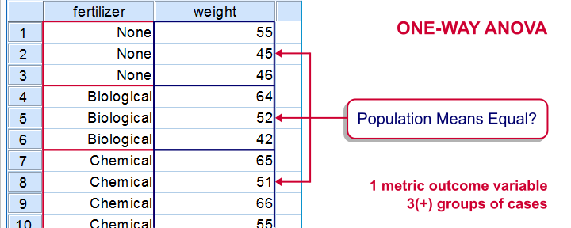
简单示例 - 单因素 ANOVA
一位科学家想知道来自学校 A、B 和 C 的所有孩子的平均智商分数是否相等。每所学校有 1,000 名儿童。测试所有 3,000 名儿童需要花费太多的时间和金钱。因此，对每所学校的 n = 10 名儿童进行了简单的随机抽样测试。部分数据 - 可从 此 Google 表格 获得 - 如下所示。
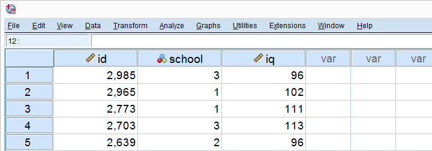
描述性统计表
好的，我们的数据包含 3 个样本，每个样本有 10 个孩子及其智商分数。运行一个简单的描述性统计表 (descriptives table) 立即告诉我们这些样本的平均智商分数。结果如下所示。
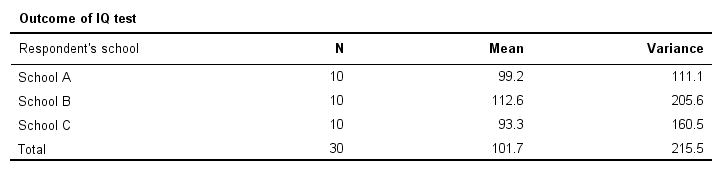
为了更清楚地说明问题，让我们在简单的条形图中可视化每所学校的平均智商分数。
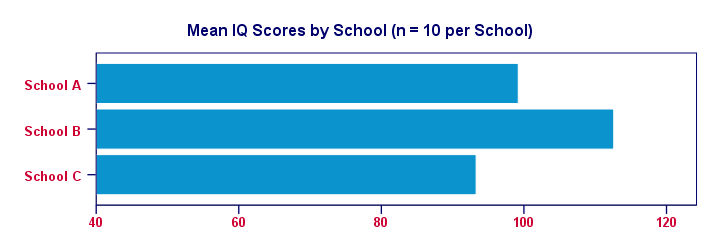
显然，我们来自学校 B 的样本具有最高的平均智商 - 大约 113 分。对于学校 C，观察到最低的平均智商 - 约为 93 分。现在，问题来了：我们的平均智商分数仅基于每所学校 10 个孩子的微小样本。那么，是否有可能每所学校的 所有 1,000 个孩子都具有相同的平均智商？也许我们只是碰巧抽样了学校 B 中最聪明的孩子和学校 C 中最笨的孩子？“最笨”在这里并不真正合适：这些孩子可能具有出色的才能 - 不幸的是，他们没有通过管理的测试来衡量。但是，对智商测试的有用性的讨论超出了本教程的范围。这现实吗？我们将尝试表明，鉴于我们的数据，这种说法 - 我们的零假设 (null hypothesis) - 是不可信的。
ANOVA - 零假设 (Null Hypothesis)
(任何) ANOVA 的零假设 (null hypothesis) 是所有总体均值完全相等。如果成立，那么我们的 样本均值 可能会略有不同。毕竟，样本总是与它们所代表的总体略有不同。但是，样本均值可能不应相差太大。在我们的总体均值相等的零假设下，这种结果不太可能发生。因此，如果我们 确实 发现这一点，我们可能不再相信我们的总体均值确实相等。
ANOVA - 组间平方和 (Sums of Squares Between)
那么，我们的 3 个样本均值究竟有多不同？这些数字相距有多远？一个告诉我们这一点的数字是方差 (variance)。因此，我们基本上会计算 3 个样本均值之间的方差。正如您可能（或可能不会）从 ANOVA 公式 中理解的那样，这首先要计算 3 个样本均值与总体均值之间的平方偏差之和。结果称为“组间平方和 (sums of squares between)”或 SSbetween。因此，组间平方和 (sums of squares between) 表达了样本均值之间的总离散量。在其他条件相同的情况下，较大的 SSbetween 表明样本均值差异更大。而且，我们的样本均值越不同，我们的总体均值也越有可能不同。
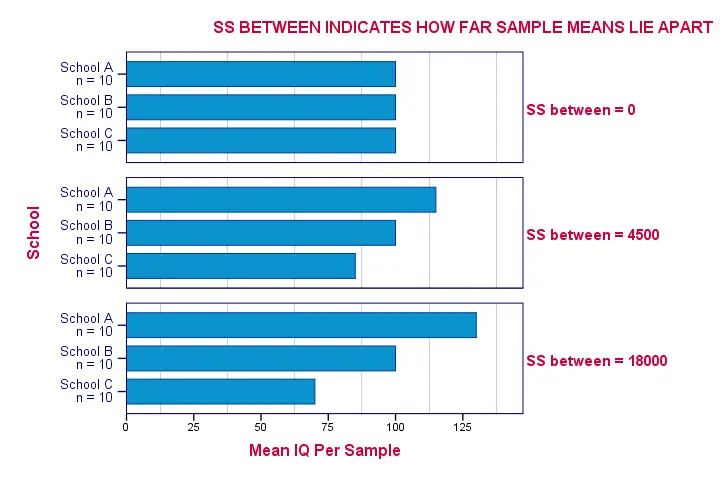
自由度和组间均方 (Degrees of Freedom and Mean Squares Between)
计算“正常”方差时，我们将平方和除以其自由度 (degrees of freedom, df)。比较 k 个均值时，自由度 (df) 为 (k - 1)。
将 SSbetween 除以 (k - 1) 会得出组间均方 (mean squares between)：MSbetween。简而言之，组间均方 (mean squares between) 基本上是样本均值之间的方差 (variance)。因此，MSbetween 指示我们的样本均值差异（或相距）有多远。均值之间的方差越大，我们的总体均值也越有可能不同。
ANOVA - 组内平方和 (Sums of Squares Within)
如果我们的总体均值确实相等，那么我们可以合理地预期样本均值之间的什么差异 - MSbetween - 呢？嗯，这取决于亚总体 内部 的方差 (variance)。下图说明了 3 种情况。
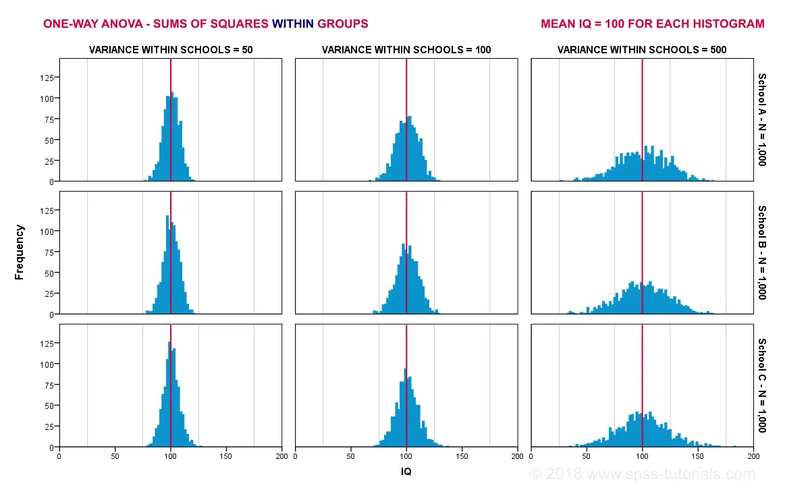
3 个****最左边的直方图显示了学校 A、B 和 C 中智商 (IQ) 的总体分布。它们的窄度表明每个学校 内部的方差 (variance) 都很小。如果我们从每所学校抽取 n = 10 名学生，我们是否应该预期非常不同的样本均值 (sample means) 呢？可能不会。为什么？嗯，由于每个学校内部的方差 (variance) 很小，因此样本均值 (sample means) 将接近于（相等）的总体均值。这些窄直方图没有留下太多空间让它们的样本均值 (sample means) 波动 - 因此 - 差异。
3 个****最右边的直方图显示了相反的情况：直方图很宽，表明每个学校 内部的方差 (variance) 很大。如果我们从每所学校抽取 n = 10 名学生，则这些样本中的均值很容易相差很大。简而言之，学校 内部 较大的方差 (variance) 可能会导致每所学校样本均值 (sample means) 之间 更大 的方差 (variance)。我们基本上是从组内样本方差 (variance) 估计组内总体方差 (variance)。有道理，对吧？确切的计算方法在 ANOVA 公式 和 此 Google 表格 中。简而言之：
- 组内平方和 (sums of squares within) (SSwithin) 指示组内总的离散量；
- 对于 n 个观察值和 k 个组，组内自由度 (degrees of freedom within) (DFwithin) 为 (n - k)
- 组内均方 (mean squares within) (MSwithin) - 基本上是组内的方差 (variance) - 是 SSwithin / DFwithin。
ANOVA 检验统计量 - F (Test Statistic - F)
那么，总体均值相等的可能性有多大呢？这取决于我们样本中的 3 条信息：
- 样本均值之间的方差 (variance) (MSbetween)；
- 样本内的方差 (variance) (MSwithin) 和
- 样本大小。
我们基本上将所有这些信息组合成一个数字：我们的 检验统计量 F (test statistic F)。下图显示了每条证据如何影响 F。
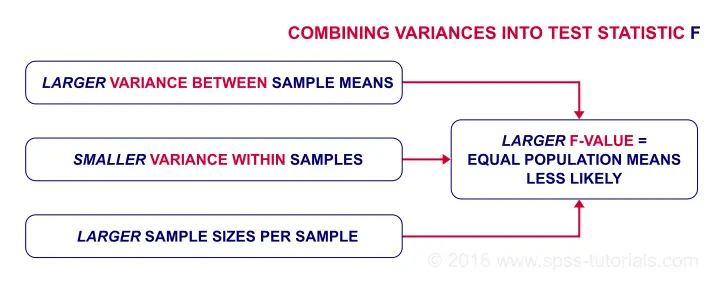
现在，F 本身一点也不有趣。但是，如果 F 服从 F 分布，我们可以从 F 获得 统计显著性 (statistical significance)。如果满足 3 个假设，它就会这样做。
ANOVA - 假设 (Assumptions)
ANOVA 的假设 (assumptions) 是：
- 独立的观察结果 (independent observations)；
- 正态性 (normality)：结果变量必须在每个亚总体 (subpopulation) 中服从 正态分布 (normal distribution)。实际上，只有在小样本量时才真正需要正态性 (normality)，例如每组 n < 20。
- 方差齐性 (homogeneity)：所有亚总体 (subpopulation) 中的方差 (variance) 必须相等。只有当样本大小非常不相等时才需要方差齐性 (homogeneity)。在这种情况下，Levene 检验 (Levene’s test) 指示是否满足该条件。
如果满足这些假设 (assumptions)，则 F 服从具有 DFbetween 和 DFwithin 自由度的 F 分布。在我们的示例中 - 3 组，每组 n = 10 - 这将是 F(2,27)。
ANOVA - 统计显著性 (Statistical Significance)
在我们的示例中，F(2,27) = 6.15。这个巨大的 F 值有力地证明了我们的零假设 (null hypothesis) - 所有学校的平均智商分数相等 - 不成立。如果满足所有假设 (assumptions)，则 F 服从下图所示的 F 分布。
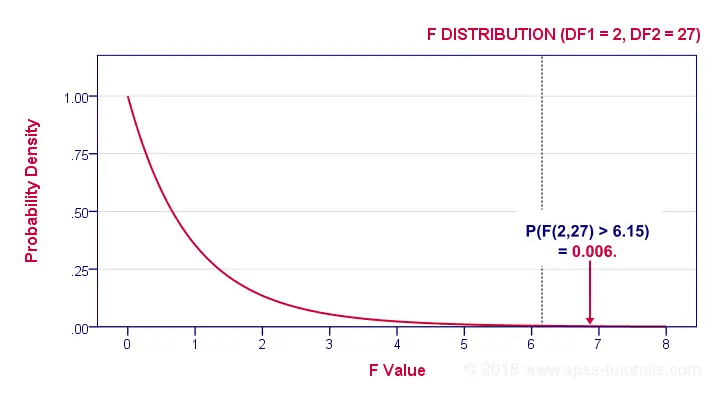
鉴于此分布，我们可以查找 统计显著性 (statistical significance)。我们通常报告：F(2,27) = 6.15，p = 0.006。如果我们的学校具有相等的平均智商，那么找到我们的样本均值差异或更大的差异的可能性只有 0.006。如果 p < 0.05，我们通常说某事“具有统计显著性 (statistically significant)”。结论：我们的总体均值 不太可能 相等。下图显示了 SPSS 如何呈现此示例的输出。
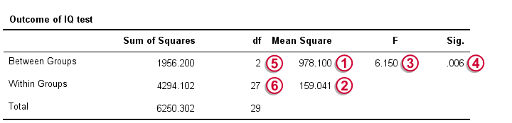
效应量 - (偏)Eta 方 ((Partial) Eta Squared)
到目前为止，我们的结论是总体均值并非完全相等。现在，“不相等”并没有说明太多。我想知道的是均值究竟 有多大不同？一个估计这一点的数字是 效应量 (effect size)。ANOVA 的效应量 (effect size) 度量是 偏 eta 方 (partial eta squared)，写为 η2。η 是希腊字母“eta”，发音为略长的“e”。对于单因素 ANOVA (one-way ANOVA)，偏 eta 方 (partial eta squared) 等于简单的 eta 方 (eta-squared)。
从技术上讲，(偏) eta 方 (partial eta squared) 是一个因子解释的方差 (variance) 的比例。一些经验法则是：
- η2 > 0.01 表示 小 效应；
- η2 > 0.06 表示 中等 效应；
- η2 > 0.14 表示 大 效应。
eta 方 (eta-squared) 的确切计算方法在公式部分中显示。就目前而言，足以说明我们示例的 η2 = 0.31。这个 巨大 的效应量 (effect size) 解释了为什么我们的 F 检验具有统计显著性 (statistically significant)，尽管我们的样本量非常小，每所学校 n = 10。
事后检验 - Tukey’s HSD (Post Hoc Tests - Tukey’s HSD)
到目前为止，我们从 F 检验得出结论，我们的总体均值 (全部) 相等的可能性很小。效应量 (effect size) η2 告诉我们差异很大。但是，一个未解决的问题是究竟 哪些 均值不同？不同的样本均值模式都可能导致完全相同的 F 值。下图用一些可能的场景说明了这一点。
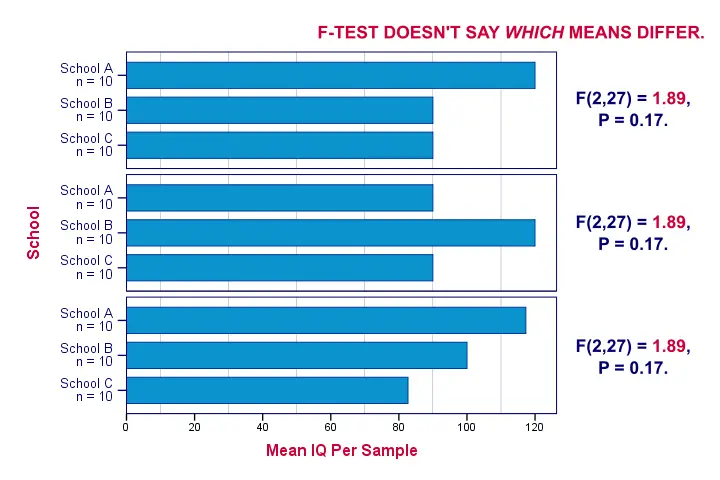
一种方法是在所有可能的均值 对 上运行 独立样本 t 检验。对于 3 个均值，这将是 A-B、A-C 和 B-C。但是，随着我们比较的均值数量的增加，所有可能对的数量迅速增加。准确地说，k 个均值导致 0.5 * k * (k - 1) 个不同的对。像这样，3 个均值有 3 个不同的对，4 个均值有 6 个不同的对，5 个均值有 10 个不同的对。而且，每个 t 检验都有其得出错误结论的机会。因此，我们运行的 t 检验越多，得出至少一个错误结论的风险就越大。
解决此问题的最常见方法是使用 Tukey’s HSD（“Honestly Significant Difference”的缩写）程序。您可以将其视为运行所有可能的 t 检验，其结果已使用某种 Bonferroni 校正 进行了校正，但保守程度较低。下图显示了 SPSS 中 Tukey’s HSD 的一些输出。
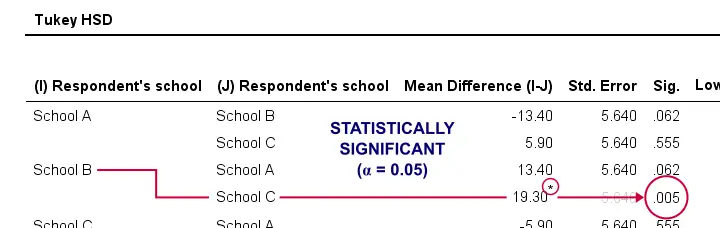
Tukey’s HSD 被称为 事后检验 (post hoc test)。“Post hoc”是拉丁语，字面意思是“在那之后”。这是因为它们仅在主要 F 检验表明并非 所有 均值都相等之后才运行。我并不完全同意这个惯例，因为
- 事后检验 (post hoc test) 可能不会 表明差异，而主要 F 检验 会 表明差异；
- 事后检验 (post hoc test) 可能会 表明差异，而主要 F 检验 不会 表明差异。
假设我正在比较 5 个均值：A、B、C 和 D 相等，但 E 比其他均值大得多。在这种情况下，在测试所有均值是否相等时，E 与其他均值之间的巨大差异将被强烈稀释。因此，在这种情况下，总体 F 检验可能不会表明任何差异，而事后检验 (post hoc test) 会 表明差异。
最后但并非最不重要的一点是，还有许多其他事后检验 (post hoc test)。有些需要方差齐性 (homogeneity) 假设 (assumption)，而另一些则不需要。下图显示了一些示例。
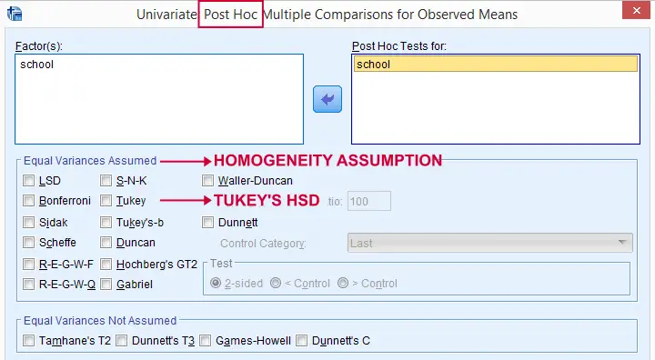
ANOVA - 基本公式 (Basic Formulas)
为了完整起见，我们将列出在我们的示例中用于单因素 ANOVA (one-way ANOVA) 的主要公式。您可以在 此 Google 表格 中看到它们的实际效果。我们将从 组间 (between-groups) 方差 (variance) 开始：\[SS_{between} = \Sigma\;n_j\;(\overline{X}_j - \overline{X})^2\] 其中
- \(_j\) 表示组均值；
- \(\) 是总体均值；
- \(n_j\) 是每组的样本大小。
对于我们的示例，这导致\[SS_{between} = 10\;(99.2 - 101.7)^2 + 10\;(112.6 - 101.7)^2 + 10\;(93.3 - 101.7)^2 = 1956.2 \] 接下来，对于 \(m\) 组，\[df_{between} = m - 1\] 因此，对于我们的示例数据，\(df_{between}\) = 3 - 1 = 2。\[MS_{between} = \frac{SS_{between}}{df_{between}}\] 对于我们的示例，这将是\[\frac{1956.2}{2} = 978.1\] 现在我们转向 组内 (within-groups) 方差 (variance)。首先，\[SS_{within} = \Sigma\;(X_i - \overline{X}_j)^2\] 其中
- \(_j\) 表示组均值；
- \(X_i\) 表示单个观察值（“数据点”）。
对于我们的示例，这将是\[SS_{within} = (90 - 99.2)^2 + (87 - 99.2)^2 + ... + (96 - 93.3)^2 = 4294.1\] 对于 \(n\) 个独立观察值和 \(m\) 个组，\[df_{within} = n - m\] 因此，对于我们的示例，这将是 = 30 - 3 = 27。 \[MS_{within} = \frac{SS_{within}}{df_{within}}\] 对于我们的示例，这导致\[\frac{4294.1}{27} = 159\] 我们现在准备好计算 F 统计量 (F-statistic)：\[F = \frac{MS_{between}}{MS_{within}}\] 这导致\[\frac{978.1}{159} = 6.15\] 最后，\[P = P(F(2,27) > 6.15) = 0.0063\] 可选地，效应量 (effect size) η2 计算为\[Effect\;\;size\;\;\eta^2 = \frac{SS_{between}}{SS_{between} + SS_{within}}\] 对于我们的示例，这将是\[\frac{1956.2}{1956.2 + 4294.1} = 0.31\] 感谢阅读。